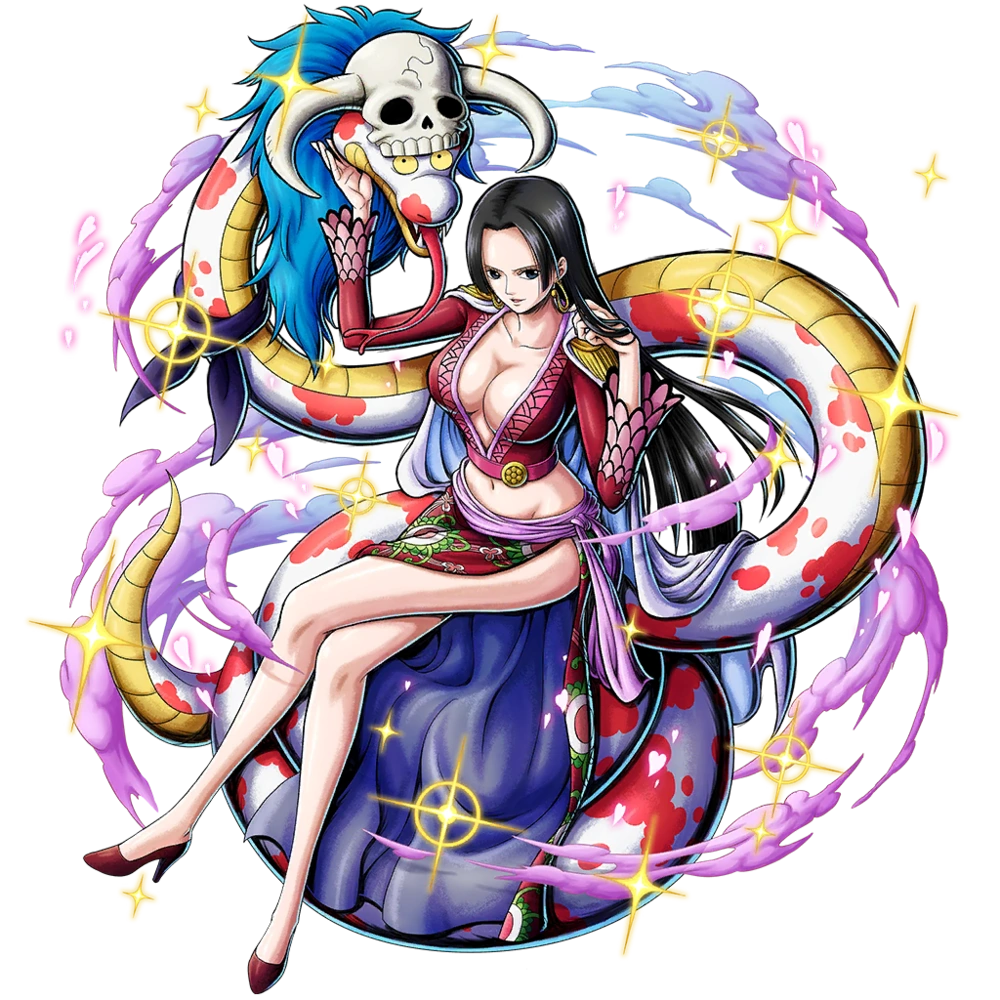
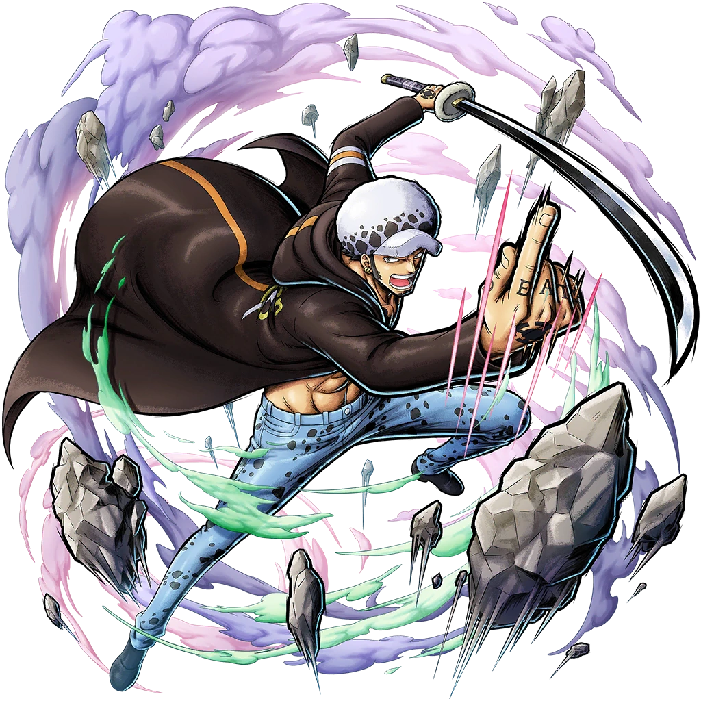

-
Ace
Portgas D. Ace, foi o irmão mais velho adotivo de Luffy e Sabo, e filho do falecido Rei dos Piratas, Gol D. Roger e sua amante, Portgas D. Rouge. Ace era o comandante da 2ª divisão dos Piratas do Barba Branca e capitão dos Piratas Spade. Ele também é o personagem central da série de histórias de capa, A Grande Busca de Ace pelo Barba Negra Caçado pelo Governo Mundial por sua linhagem, Ace foi capturado e condenado à morte, o que resultou na Batalha de Marineford em um confronto de poderes. Ace foi salvo por Luffy, mas ele sacrificou sua vida para proteger seu irmão mais novo de Akainu.

-

Boa Hancock
Sendo considerada a mulher mais bonita do mundo, Hancock é a capitã das Kujas, uma tripulação pirata. Ela é Imperatriz de Amazon Lily, a ilha das mulheres, onde tem a alcunha de Princesa Serpente. Boa é uma Shichibukai, sendo a única mulher do grupo. A pirata, além de ser conhecida pela sua beleza, é também reconhecida por seu grande poder, sendo considerada uma das mulheres mais perigosas do universo de One Piece.
-
Shanks
Shanks, "o Ruivo", é o capitão dos Piratas do Ruivo e um membro dos Yonkou que governam o Novo Mundo. Ele também é um ex-membro dos lendários Piratas do Roger, o único grupo a conquistar com sucesso a Grand Line, que foi onde começou como Pirata Aprendiz. Notavelmente, ele é o pirata que inspirou Luffy em sua jornada como pirata, e seu companheiro de tripulação, Lucky Roux, foi quem encontrou a Gomu Gomu no Mi que foi acidentalmente comida por Luffy.

-

Sabo
Sabo é o chefe de gabinete do Exército Revolucionário, reconhecido como o "No. 2" de toda a organização, sendo este o ranking diretamente abaixo de Monkey D. Dragon. Além de ser o irmão jurado de Monkey D. Luffy e Portgas D. Ace , ele é descendente de nobre, o filho de Outlook III, bem como através de seus pais o irmão adotivo de Sterry, o atual Rei do Reino de Goa, a quem Sabo nunca reconheceu como tal.
-
Barba Branca
Edward Newgate, mais conhecido como Barba Branca, era o capitão dos Piratas do Barba Branca e era também conhecido como "O Homem Mais Forte do Mundo" e "O Homem Mais Próximo do One Piece" após a morte de Gol D. Roger. Era um dos Yonkou que governou o Novo Mundo antes de morrer em Marineford pelas mãos de Barba Negra. O verdadeiro tesouro para ele é a família, considerando todos os membros de sua tripulação como filhos.

-

Trafalgar Law
Trafalgar Law , é um pirata do North Blue e capitão e médico dos Piratas Heart. Ele é um dos doze piratas que são referidos como a "Pior Geração" se tornando um dos Shichibukai ,mas sua posição foi revogada por se aliar aos Piratas do Chapéu de Palha e derrubar Donquixote Doflamingo.Ele é um dos aliados centrais dos Piratas do Chapéu de Palha durante as Sagas de Dressrosa e Yonkou. Ele também atua como um aliado de Luffy durante o filme One Piece: Stampede.